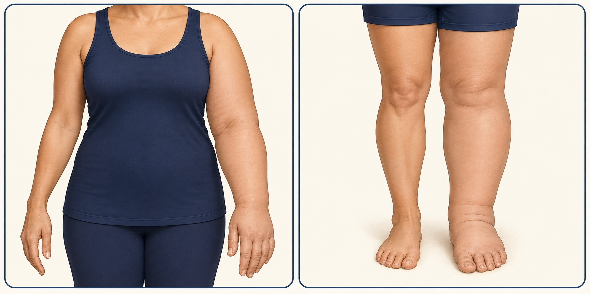

Limb swelling · Assessment & care
Lymphedema of the Arms & Legs
Persistent swelling deserves a clear diagnosis. Explore assessment and care for upper- and lower-limb lymphedema with Dr Agnes Yeo in Klang, Selangor.
Discuss Your ConcernWhat is lymphedema?
Lymphedema, also spelt lymphoedema, is swelling caused by impaired lymph drainage. It can affect one or both arms or legs. Some people develop it because their lymphatic system has not developed normally (primary lymphedema); others develop it after damage to lymph vessels or nodes (secondary lymphedema).

Upper limbs: arms & hands
Swelling may follow breast cancer treatment involving lymph nodes or radiotherapy. Heaviness, tightness, reduced movement or a sleeve, watch or ring feeling tighter can be reasons to seek assessment.
Lower limbs: legs & feet
Swelling may follow pelvic or groin lymph node treatment, injury or infection, or have a primary lymphatic cause. Changes can affect footwear, walking and skin comfort. Leg swelling also has many non-lymphatic causes.
Persistent swelling, skin thickening or repeated skin infections should be assessed. Swelling alone does not confirm lymphedema.
Diagnosis starts with understanding the cause
Assessment includes when swelling began, previous cancer treatment or surgery, infections, medicines and other health conditions. Examination considers the skin, tissue changes, limb measurements and the effect on daily activities.
Other causes, including venous disease, blood clots and heart or kidney problems, may need investigation. Ultrasound or specialist lymphatic imaging, such as lymphoscintigraphy, may be requested when needed; not everyone requires scans. Tests and referrals depend on the findings and local availability.
Bring relevant operation reports, scan results, a medication list and details of any previous compression garments or therapy. If you are receiving cancer care, coordination with your treating team is important.
Conservative therapy is the foundation of care
A tailored programme, often called complete decongestive therapy, aims to control swelling and support function. It may involve a trained lymphoedema therapist and ongoing self-care.
- Compression: professionally selected bandaging, sleeves or stockings, after checking suitability, including leg circulation where relevant.
- Skin care: keeping skin clean and moisturised, protecting it from injury and recognising infection early.
- Movement: gradual exercises matched to your ability, with support for mobility and weight management where appropriate.
- Manual lymphatic drainage: gentle, specialised techniques when indicated, taught or performed by a trained practitioner.
Follow-up helps adjust garments and review progress. Do not start strong compression or massage for unexplained new swelling before medical assessment. Treatment usually requires long-term maintenance; it does not promise a permanent cure.
When might specialist surgery be considered?
Selected patients may benefit from surgical assessment alongside conservative care. Suitability depends on lymphatic function, tissue changes, symptoms, overall health and treatment goals.
The options below are general information, not confirmation that every procedure is offered at this clinic. During consultation, ask which services are available and whether referral to a specialist lymphatic surgery centre is appropriate.
- Lymphaticovenular anastomosis (LVA), or lymphovenous bypass: microsurgical connections between suitable lymph vessels and small veins to help redirect fluid.
- Vascularised lymph node transfer (VLNT): transfer of lymph nodes with their blood supply in selected cases. Donor-site risks require careful discussion.
- Specialist liposuction or tissue reduction: considered for selected limbs with substantial fat or fibrotic tissue. This differs from routine cosmetic liposuction; ongoing compression is essential, and is usually lifelong after lymphedema liposuction.
Surgery has risks, including infection, wound problems, scarring and incomplete improvement. It does not guarantee normal limb size or freedom from compression. Expected benefits, limitations and aftercare must be discussed individually.
Common questions
Is all arm or leg swelling lymphedema?
No. An examination is needed to distinguish it from other causes and decide whether further tests are appropriate.
Do I need surgery?
Many patients are managed with conservative therapy. A consultation can clarify the diagnosis and whether a specialist surgical opinion would be useful.
Can a diagnosis be made through WhatsApp?
WhatsApp can help arrange an appointment. It cannot replace an appropriate clinical examination or urgent medical care.
Arrange a lymphedema assessment
Enquire about upper- or lower-limb swelling and appointment availability with Dr Agnes Yeo in Klang. The care plan, any referrals and costs depend on your assessment.
Enquire on WhatsApp